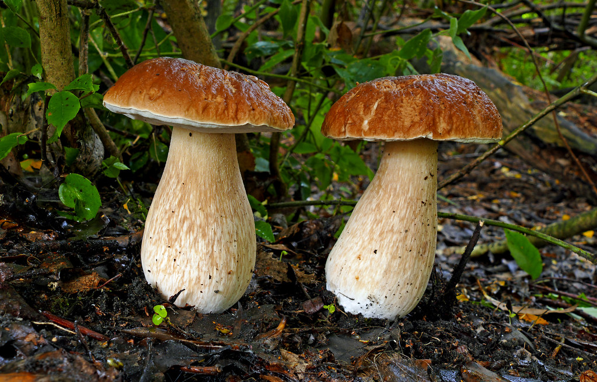

Mushroom foraging
Welcome to the presentation of one of the most delicious foraged mushroom in the world.
The Boletus Edulis :

How do identify it ?
- The Boletus Edulis (also know as Penny bun, Porcini, Cep, King bolete) cap is 7-20 cm across. White when very young (sometimes also as adults with the lack of luminosity), maturing to look like a crusty brown roll, hence the name Penny Bun. The edge of the cap is often white.
- Porcini has small white pores which can yellow to brown a bit with age.
- Cep stem 10-14 cm long, 2-4 cm diameter. Thick, bulbous and white ageing to slightly tan yellow. The stem has a fine net like covering just under the cap and sometimes extending all the way down the stem, solid when young, fresh or free from maggots.
- The flesh is white and can be yellowing while ageing.
- Taste / Smell Excellent raw or fried in butter when fresh. Very mushroomy, one of the best species to dry where the mushroom flavour is enhanced.
- You can forage the King bolete in mixed woodland but found more with beech, oak or pine.